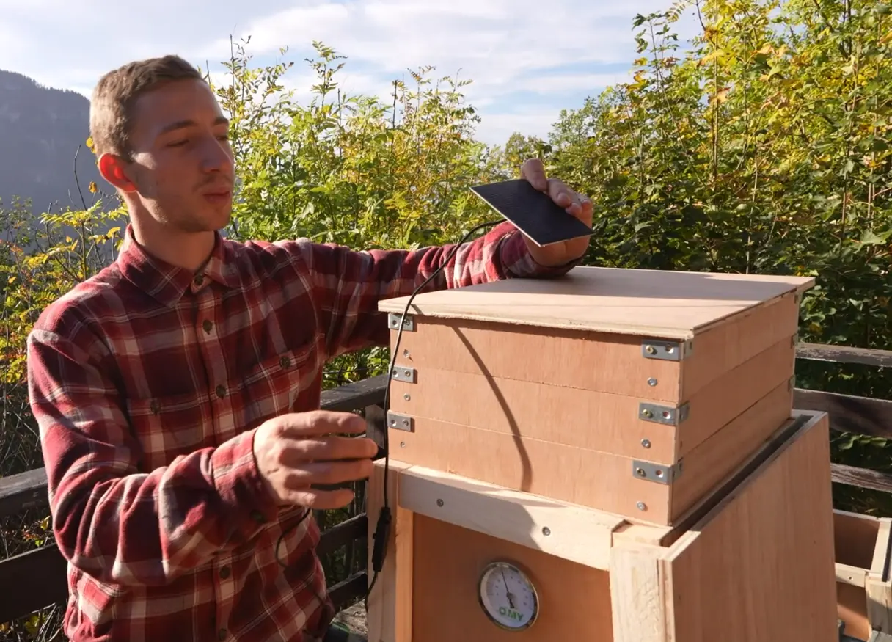
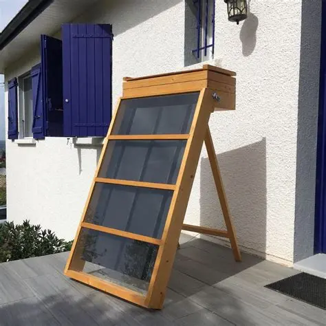
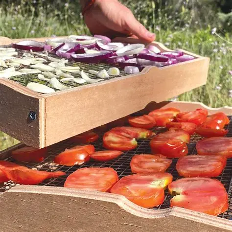

Clients satisfait ou exemple d'utilisation



L'idée de ce projet nous est venu dans le cadres des Entreps de Dijon. Les questions liées à l'environnement et à l'écologie sont importantes pour nous c'est pour ça nous avons choisi de nous orienter dans la Low Tech. Durant nos recherches, nous avons observé que le marché des séchoirs solaires était très polarisé, soit des petits produits artisanaux, soit des produits plus avancés mais souvent trop cher et trop volumineux. Mais pourtant beaucoup de producteurs se situent dans cet entre-deux, les produits artisanaux ne permettent pas d'obtenir la meilleur qualité possible et les produits d'usine sont trop cher et pas proportionnés aux besoins. On a donc décidé de mettre au point un séchoir solaire à moindre coût mais qui permet un suivi précis de la qualité grâce à de l'electronique embarqué dans le séchoir.
Notre produit est pour les petits producteurs de PPAM, pour les productions qui cherchent à se diversifier ou aux passionés de PPAM qui shouaiterait conservé les qualités de produits qu'ils ceuillent.


